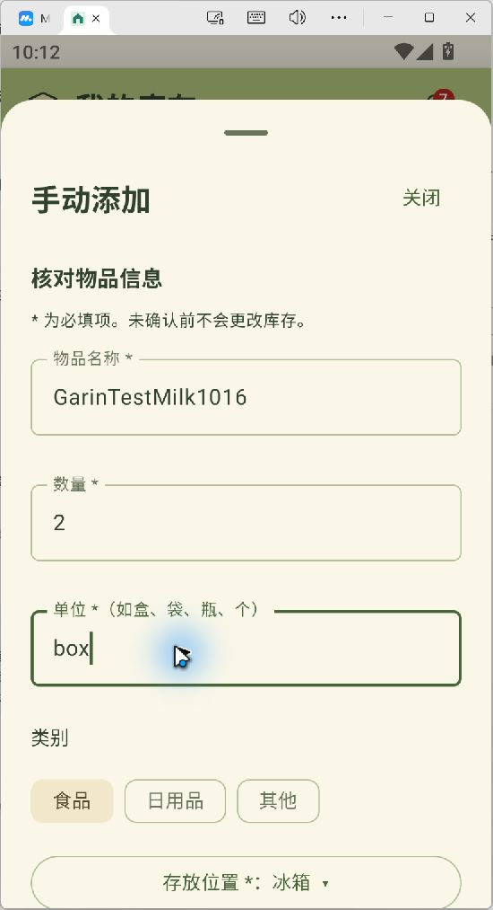

MuMu Android 12 · 游客手动录入
原始模拟器截图，未确认草稿464源码回归通过AI及网关 · 规则模式
40后端本地通过临时SQLite环境
17移动端单测通过Android构建亦通过
22独立专项通过对应24条观察记录
本机操作证据 确认前不改变库存
录入草稿：GarinTestMilk1016 ／ 2 box
持久库存：15条；新增测试物品 0条
数据校验：原15条记录无变化，云端登录会话不存在
依据：032_manual_unit_box.png 与 before_background_unconfirmed.json
另已验证 库存与采购的本地接口闭环
新增2盒 → 消耗0.5盒 → 实购1.5盒 → 合计3盒独立SQLite测试通过；已检查重复请求、旧版本冲突及家庭权限。
仍待验证：共享云注册/自动登录、远程模型查询、云端登出失效，以及同一操作在App → Agent → Backend → DB中的一致性。
AI 464项为补齐副本后的复跑；首轮失败及37条旧FAIL保留。Lint受依赖阻塞。
左侧与右侧为分层证据，不是同一轮云端闭环，统计不跨组相加。